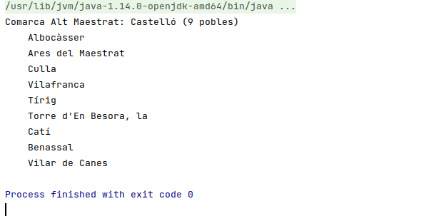

5.2 - Començant a programar
Com que hem fet un projecte Maven, totes les llibreries necessàries estaran ja incorporades.
I si ja hem incorporat el Driver de PostgreSQL, bé directament tal com feem en el Tema 4, bé incorporant la dependència en el fitxer pom.xml, aleshores ja estem en condicions de començar a programar.
Tots els programes que farem, els posarem dins del paquet exemples, que ha d'estar dins de src -> main -> kotlin. Aquest primer programa el podem guardar amb el nom Exemple_01_PrimerAcces.kt:
package exemples
import org.hibernate.cfg.Configuration
import classes.Comarca
fun main(args: Array<String>) {
val sf = Configuration().configure().buildSessionFactory()
val sessio = sf.openSession()
val com = sessio.load("classes.Comarca", "Alt Maestrat") as Comarca
print("Comarca " + com.nomC + ": ")
print(com.provincia)
println(" (" + com.poblacions.size + " pobles)")
sessio.close()
}L'execució ens haurà donat molts avisos, que són un poc pesats, però l'execució (la línia en negre quasi al final) ha eixit bé

El programa a carregat la comarca de l'Alt Maestrat, i ens ha dit la província i el número de pobles
Anem a llevar aquetsos missatge, que són únicament de INFO. Senzillament li direm que mostre únicament els errors severs.
LogManager.getLogManager().getLogger("").setLevel(Level.SEVERE)Aprofitarem per a canviar un poc el programa, i ara traurem també el nom dels pobles de la comarca Alt Maestrat. Així veiem també el potencial, ja que és comodíssim accedir els pobles de la comarca. Guardeu el següent programa amb el nom Exemple_02_SegonAcces.kt:
package exemples
import classes.Comarca
import org.hibernate.cfg.Configuration
import java.util.logging.Level
import java.util.logging.LogManager
fun main(args: Array<String>) {
LogManager.getLogManager().getLogger("").setLevel(Level.SEVERE)
val sessio = Configuration().configure().buildSessionFactory().openSession()
val com = sessio.load("classes.Comarca", "Alt Maestrat") as Comarca
print("Comarca " + com.nomC + ": ")
print(com.provincia)
println(" (" + com.poblacions.size + " pobles)")
for (p in com.poblacions)
println("\t" + p.nom)
sessio.close()
}I aquest serà el resultat:

Llicenciat sota la Llicència Creative Commons Reconeixement NoComercial CompartirIgual 2.5